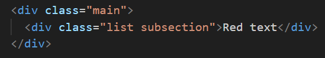
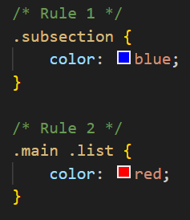
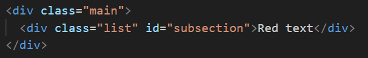
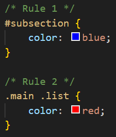
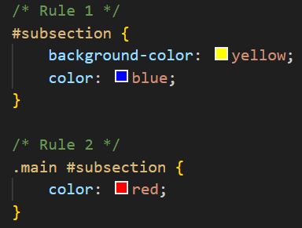

A CSS declaration that is more specific will take precedence over less specific ones. Inline styles have the highest specificity compared to selectors, while each type of selector has its own specificity, but this focuses on the ones that have been covered so far:
Specificity is only taken into account when an alement has multiple, conflicting declarations targeting it. An ID selector will always beat any number of class selectors, a class selector will always beat any number of type selectors, and a style selector will always beat any number of less specific selectors. When there is no declaration with a selector of higher specificity, a rule with a greater number of selectors of the same type will take precedence over another rule with fewer selectors.
The example below shows how specificity works.


In the example above, both rules are using only class selectors, but rule 2 is more specific because it is using more class selectors, so the colour red declaration would take precedence.
Let's change it up a bit


In the example above, despite rule 2 having more class selectors then ID selectors, rule 1 is more specific because ID beats class. In this case, the colour blue declaration would take precedence.
A little more complex...

In the final example above, the first rule uses an ID selector, while the second rule combines an ID and class selector. Therefore, neither rule is using a more specific selector than the other. The cascade then checks the number of each selector type. Both rules have only one ID selector, but rule 2 has an ID and class selector. so rule 2 has higher specificity.
While the colour red declaration would take precedence, the background colour yellow declaration would still be applied since there's no conflicting declaration for it. The example below shows this in action:
As there's no clash between the background colour, the highest specificity is applied. As there's a clash between colours (red and blue), the rule with the highest specificity applies it's colour instead.